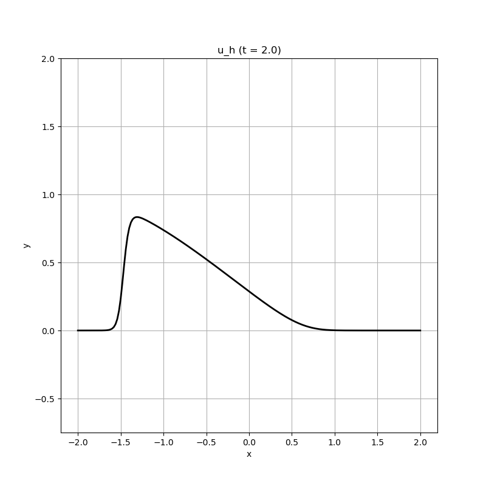

103 : Burger's Equation 1D
This example solves the Burger's equation
\[\begin{aligned} u_t - \mu \Delta u + \mathrm{div} f(u) & = 0 \end{aligned}\]
with periodic boundary conditions.
module Example103_BurgersEquation1D
using GradientRobustMultiPhysics
using ExtendableGrids
using GridVisualize
const f = (result, u) -> (result[1] = u[1]^2/2;) # kernel for nonlinearity
const u0 = DataFunction((result,x) -> (result[1] = abs(x[1]) < 0.5 ? 1 : 0), [1, 1]; dependencies = "X", bonus_quadorder = 4) # initial height
# everything is wrapped in a main function
function main(; verbosity = 0, ν = 1e-2, h = 0.02, T = 2, order = 2, τ = 5//100, Plotter = nothing)
# set log level
set_verbosity(verbosity)
# load mesh and exact solution
xgrid = simplexgrid(-2:h:2)
# set finite element types [surface height, velocity]
FEType = H1Pk{1,1,order}
# generate empty PDEDescription for three unknowns (h, u)
Problem = PDEDescription("Burger's Equation")
add_unknown!(Problem; unknown_name = "u", equation_name = "Burger's Equation")
add_operator!(Problem, 1, NonlinearForm(Gradient, [Identity], [1], f, [1,1]; name = "(f(#A),∇#T)", newton = true, bonus_quadorder = 2))
add_operator!(Problem, [1,1], LaplaceOperator(ν))
add_constraint!(Problem, CombineDofs(1, 1, [1],[num_nodes(xgrid)]))
@show Problem
# prepare solution vector and interpolate u0
Solution = FEVector("u_h", FESpace{FEType}(xgrid))
interpolate!(Solution[1], u0)
# init plotter and plot u0
p = GridVisualizer(; Plotter = Plotter, layout = (1,1), clear = true, resolution = (800,800))
scalarplot!(p[1,1], xgrid, nodevalues_view(Solution[1])[1], flimits = (-0.75,2), levels = 0, title = "u_h (t = 0)")
# configure time-dependent solver
TCS = TimeControlSolver(Problem, Solution, BackwardEuler;
timedependent_equations = [1],
maxiterations = 10,
show_iteration_details = true,
T_time = typeof(τ))
# advance in time
function do_each_timestep(kwargs...)
scalarplot!(p[1,1], xgrid, nodevalues_view(Solution[1])[1], flimits = (-0.75,2), levels = 0, title = "u_h (t = $(Float64(TCS.ctime)))")
end
advance_until_time!(TCS, τ, T; do_after_each_timestep = do_each_timestep)
end
endThis page was generated using Literate.jl.
Default output:
julia> Example103_BurgersEquation1D.main()
Problem =
PDE-DESCRIPTION
===============
system name = Burger's Equation
id | unknown name / variables [#A, #T] / equation name
[1] | u / ["u", "v"] / Burger's Equation
LHS block | PDEOperator(s)
[1,1] | (f(u),∇v) [AD-Newton] [∂u] (APT = NonlinearForm, AT = ON_CELLS, regions = [0])
| 0.01 (∇u,∇v) (APT = SymmetricBilinearForm, AT = ON_CELLS, regions = [0])
RHS block | PDEOperator(s)
[1] | none
BoundaryOperators[1] :
GlobalConstraints[1] : CombineDofs[1,1] (ndofs = 1)
┌ Info: ----- Preparing time control solver for Burger's Equation using BackwardEuler -----
└ Equation (1.1) Burger's Equation for u (discretised by (H1Pk{1,1,2}, ndofs = 401), timedependent = yes
[ Info: Advancing in time from 0.0 until 2.0
STEP | TIME | LSRESIDUAL | NLRESIDUAL | RUNTIME | CHANGE
| | (total) | (total) | (s) | u
1 | 5.0000e-02 | 3.8711e-15 | 4.7811e-15 (5) | 5.027e+00 | 1.6858e+00
2 | 1.0000e-01 | 3.6075e-15 | 4.4222e-15 (4) | 1.181e-02 | 9.6901e-01
3 | 1.5000e-01 | 3.6199e-15 | 4.8008e-15 (4) | 1.136e-02 | 8.3550e-01
4 | 2.0000e-01 | 3.3424e-15 | 4.2526e-15 (4) | 1.120e-02 | 7.7077e-01
5 | 2.5000e-01 | 3.8023e-15 | 4.8554e-15 (4) | 1.138e-02 | 7.3115e-01
6 | 3.0000e-01 | 3.3673e-15 | 4.2314e-15 (4) | 1.107e-02 | 7.0408e-01
7 | 3.5000e-01 | 2.9728e-15 | 4.5496e-15 (4) | 1.079e-02 | 6.8433e-01
8 | 4.0000e-01 | 3.3836e-15 | 4.0647e-15 (4) | 1.127e-02 | 6.6922e-01
9 | 4.5000e-01 | 3.5836e-15 | 3.9938e-15 (4) | 1.098e-02 | 6.5721e-01
10 | 5.0000e-01 | 3.4735e-15 | 4.3820e-15 (4) | 1.099e-02 | 6.4734e-01
11 | 5.5000e-01 | 3.0711e-15 | 4.0727e-15 (4) | 1.135e-02 | 6.3894e-01
12 | 6.0000e-01 | 3.0625e-15 | 3.9003e-15 (4) | 1.096e-02 | 6.3155e-01
13 | 6.5000e-01 | 4.1015e-15 | 4.8949e-15 (4) | 1.075e-02 | 6.2482e-01
14 | 7.0000e-01 | 3.0456e-15 | 4.0611e-15 (4) | 1.071e-02 | 6.1852e-01
15 | 7.5000e-01 | 3.0786e-15 | 3.3494e-15 (4) | 1.112e-02 | 6.1243e-01
16 | 8.0000e-01 | 3.7808e-15 | 4.1913e-15 (4) | 1.093e-02 | 6.0641e-01
17 | 8.5000e-01 | 3.6327e-15 | 4.4604e-15 (4) | 1.139e-02 | 6.0036e-01
18 | 9.0000e-01 | 3.1218e-15 | 4.2946e-15 (4) | 1.084e-02 | 5.9421e-01
19 | 9.5000e-01 | 3.1072e-15 | 3.9349e-15 (4) | 1.095e-02 | 5.8789e-01
20 | 1.0000e+00 | 3.0553e-15 | 4.0800e-15 (4) | 1.096e-02 | 5.8139e-01
21 | 1.0500e+00 | 3.4026e-15 | 4.1061e-15 (4) | 1.101e-02 | 5.7468e-01
22 | 1.1000e+00 | 3.2476e-15 | 3.6185e-15 (4) | 1.104e-02 | 5.6776e-01
23 | 1.1500e+00 | 3.0377e-15 | 3.6290e-15 (4) | 1.081e-02 | 5.6065e-01
24 | 1.2000e+00 | 3.1685e-15 | 3.6315e-15 (4) | 1.103e-02 | 5.5336e-01
25 | 1.2500e+00 | 3.3851e-15 | 3.9251e-15 (4) | 1.103e-02 | 5.4590e-01
26 | 1.3000e+00 | 3.6280e-15 | 3.6529e-15 (4) | 1.099e-02 | 5.3831e-01
27 | 1.3500e+00 | 2.7354e-15 | 3.5357e-15 (4) | 1.115e-02 | 5.3061e-01
28 | 1.4000e+00 | 3.1538e-15 | 3.4567e-15 (4) | 1.111e-02 | 5.2281e-01
29 | 1.4500e+00 | 3.0457e-15 | 3.5857e-15 (4) | 1.108e-02 | 5.1496e-01
30 | 1.5000e+00 | 3.1551e-15 | 3.9412e-15 (4) | 1.113e-02 | 5.0707e-01
31 | 1.5500e+00 | 3.1001e-15 | 3.6155e-15 (4) | 1.108e-02 | 4.9916e-01
32 | 1.6000e+00 | 3.1005e-15 | 3.7419e-15 (4) | 1.127e-02 | 4.9126e-01
33 | 1.6500e+00 | 3.0258e-15 | 3.3954e-15 (4) | 1.135e-02 | 4.8339e-01
34 | 1.7000e+00 | 2.9175e-15 | 9.2274e-11 (3) | 8.707e-03 | 4.7556e-01
35 | 1.7500e+00 | 2.8468e-15 | 7.9657e-11 (3) | 8.789e-03 | 4.6779e-01
36 | 1.8000e+00 | 3.0226e-15 | 6.9428e-11 (3) | 8.571e-03 | 4.6009e-01
37 | 1.8500e+00 | 3.0096e-15 | 6.1171e-11 (3) | 8.954e-03 | 4.5249e-01
38 | 1.9000e+00 | 2.8816e-15 | 5.4191e-11 (3) | 8.857e-03 | 4.4497e-01
39 | 1.9500e+00 | 2.9412e-15 | 4.7946e-11 (3) | 8.622e-03 | 4.3757e-01
40 | 2.0000e+00 | 2.8916e-15 | 4.2180e-11 (3) | 8.716e-03 | 4.3027e-01 